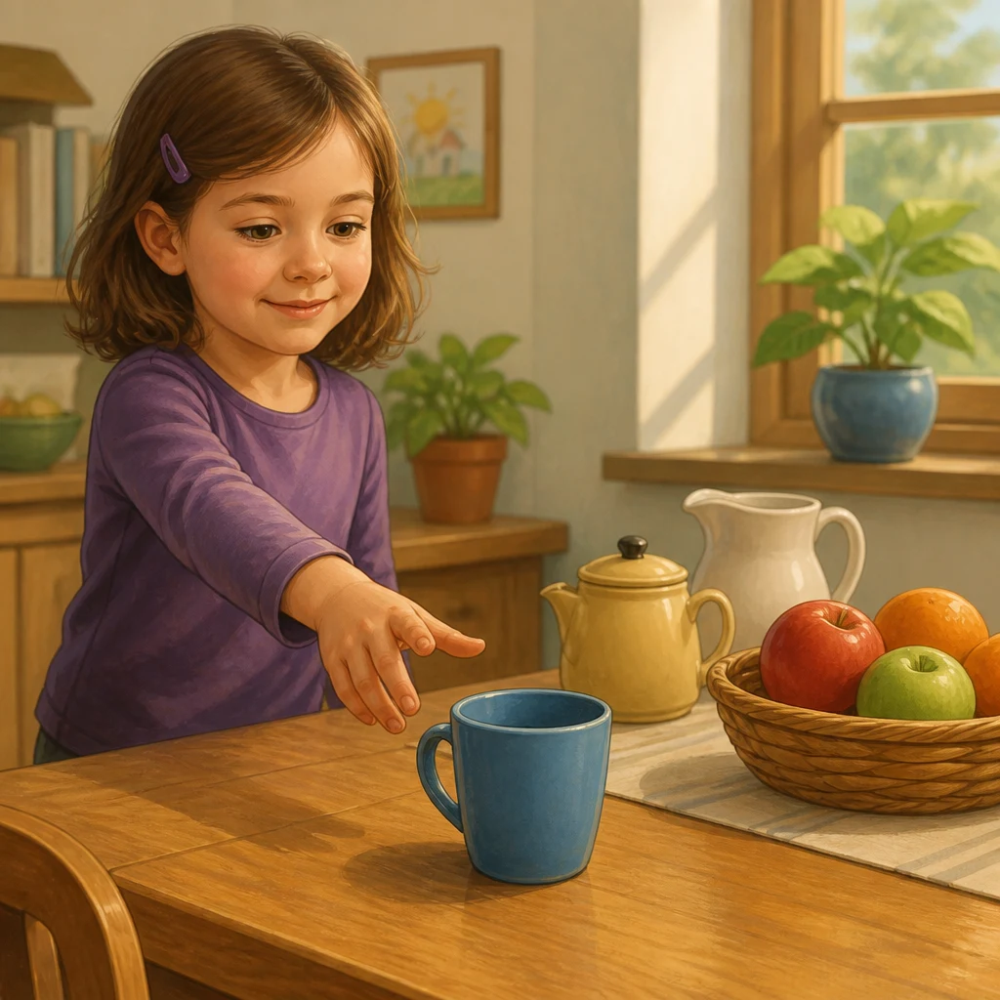
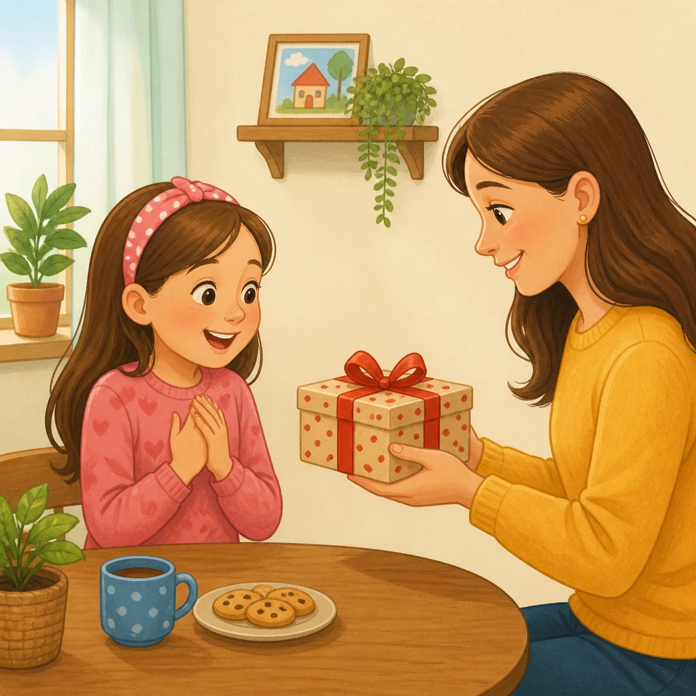
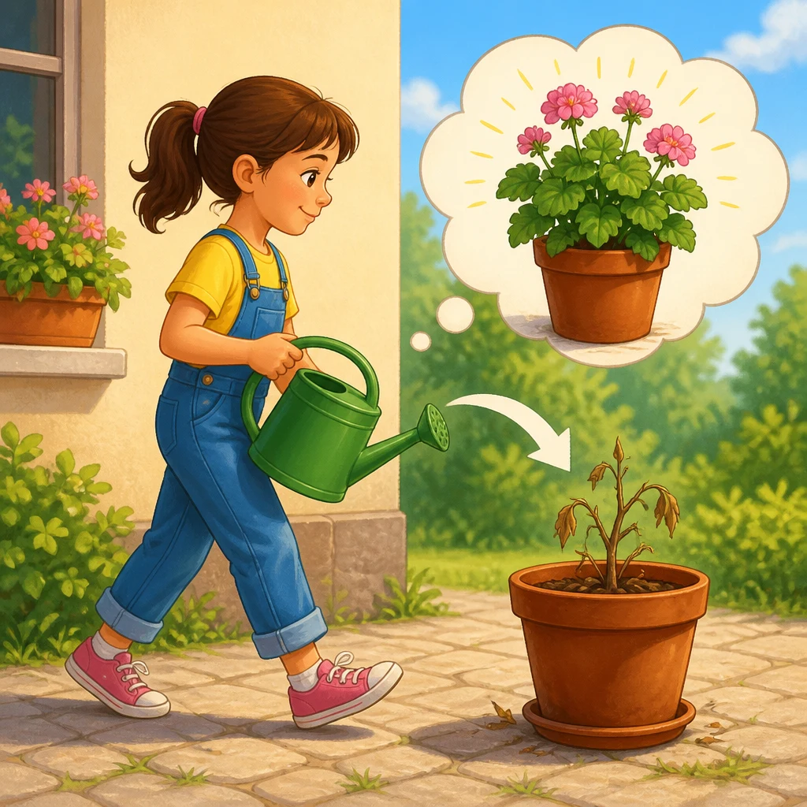
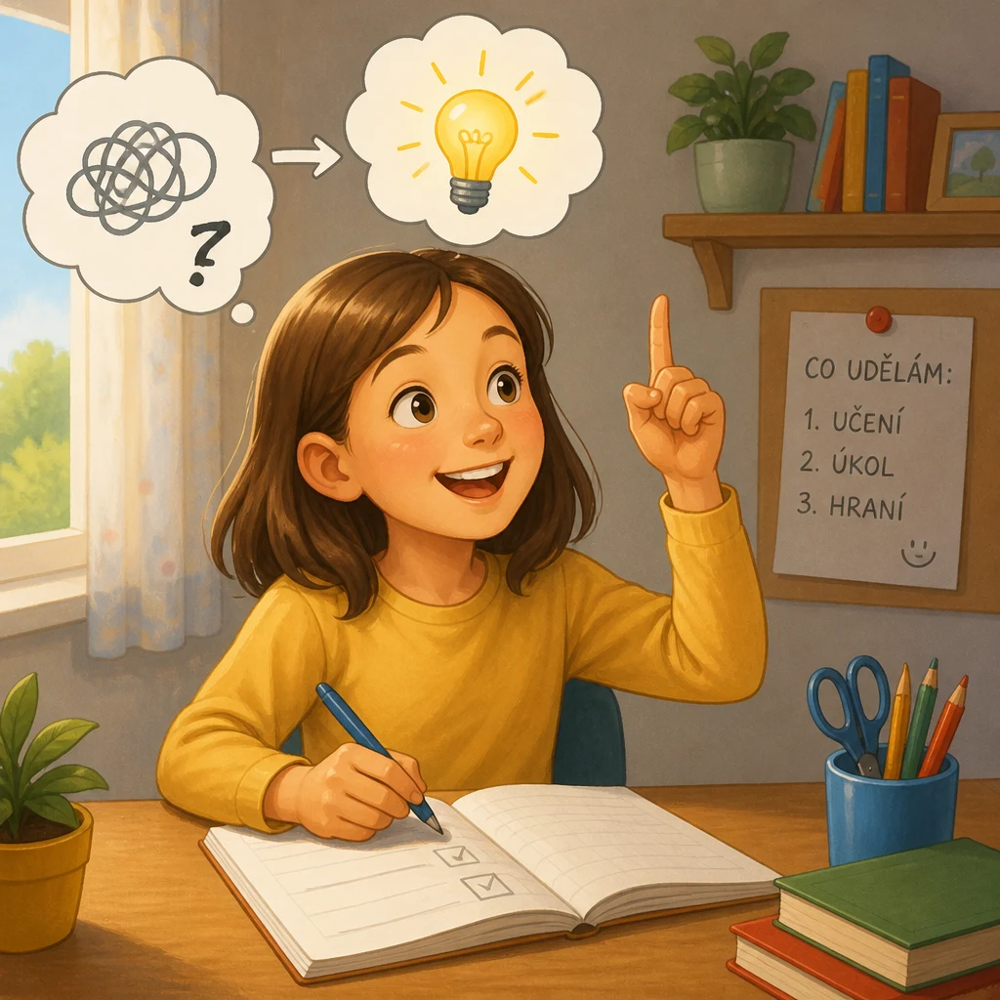
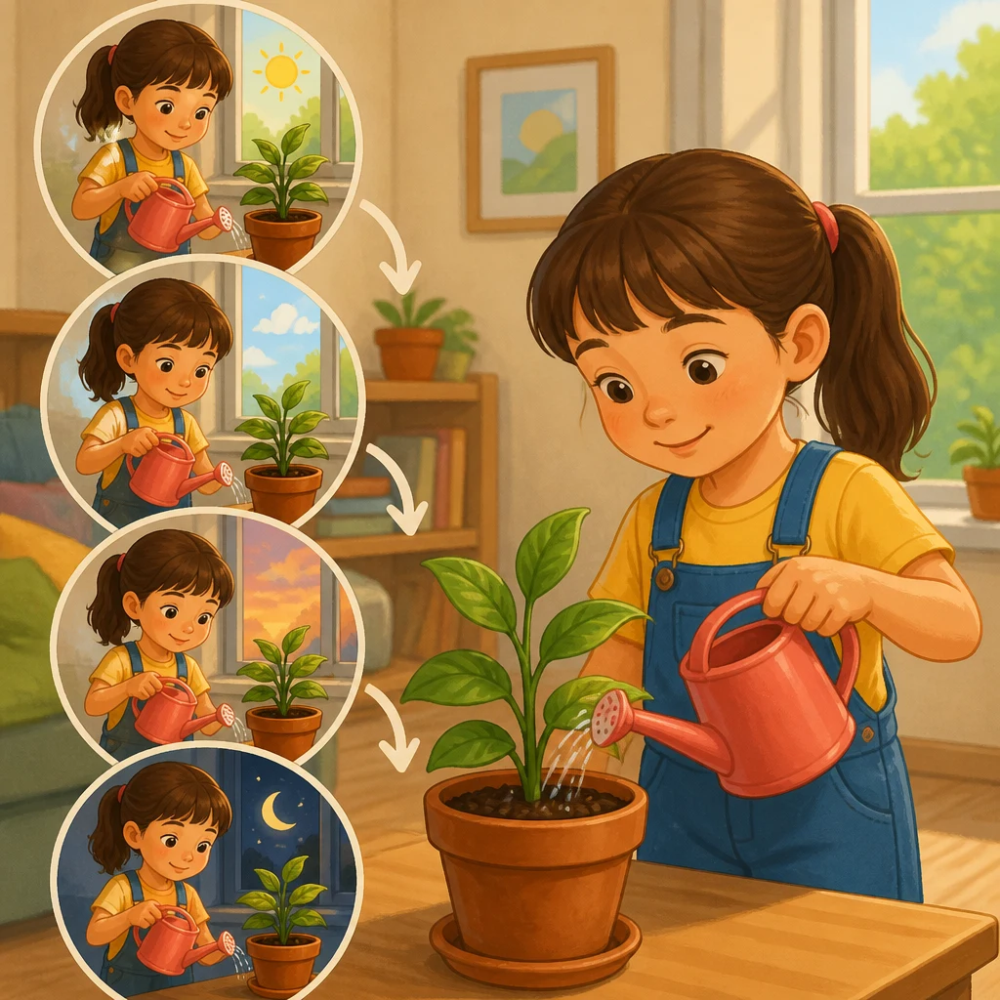
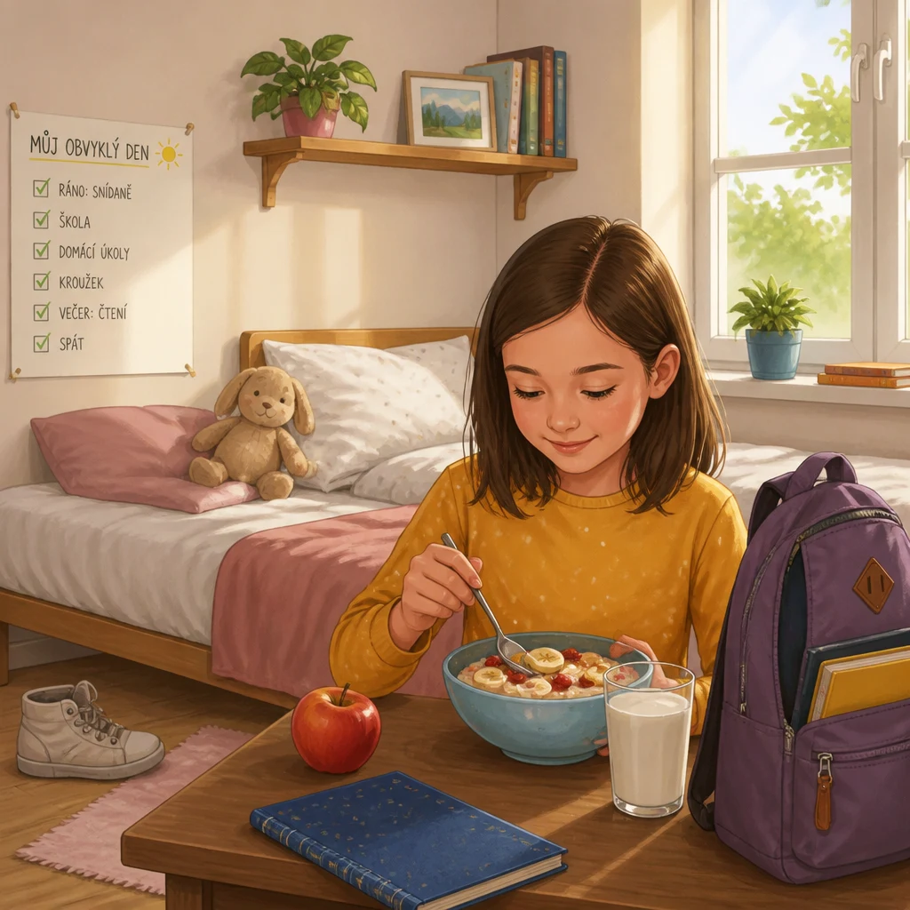

| Preview | File | Size | Words | Czech meanings | Status |
|---|---|---|---|---|---|
 |
a.webp |
107.3 kB | una / un | jedna (neurčitý člen) / jeden (neurčitý člen) | generated |
 |
perJulia.webp |
134.0 kB | per | per | generated |
 |
inorderto.webp |
185.9 kB | per | aby | generated |
 |
sothenwell.webp |
135.1 kB | allora | tak, tedy, tehdy | generated |
 |
often.webp |
166.2 kB | spesso | často | generated |
tolikepleasure.webp |
150.5 kB | piacere | líbit se, potěšení | generated | |
painevil.webp |
182.6 kB | male | špatně, zle, bolest, zlo | generated | |
month.webp |
93.7 kB | mese | měsíc | generated | |
 |
usual.webp |
122.0 kB | solito | obvyklý | generated |
go.webp |
237.0 kB | andare | jít, jet | generated |